Before you start
- AUC lives on one computer in your program. You open it in a web browser, like a website.
- Ask the person who set it up for two things: the web address to open, and the password.
- Everything stays on that computer. The AI runs there too. Nothing goes to the internet.
- Please keep it that way. Do not copy resident names, comments, or packets into email, chat apps, or online AI tools.
- The AI writes drafts, not decisions. People on your committee always make the final call.
Part 1
Find your way around
Three short steps to feel at home.
1Sign in
- Open your web browser (for example Chrome, Edge, Firefox, or Safari).
- Go to the AUC address you were given.
- Type the password, then press Sign In.

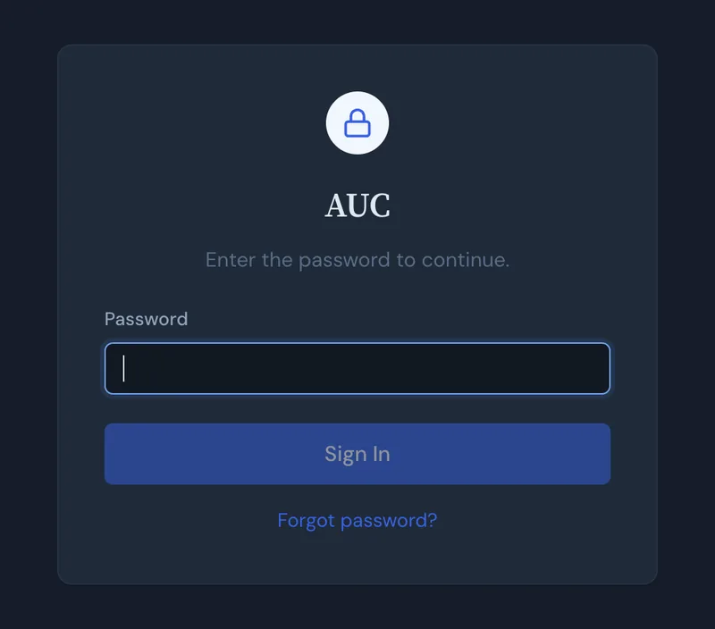
Forgot the password?Ask the person who looks after the AUC computer. They can reset it.
2The Residents screen
After you sign in, you see every resident in your program. This is the home screen.

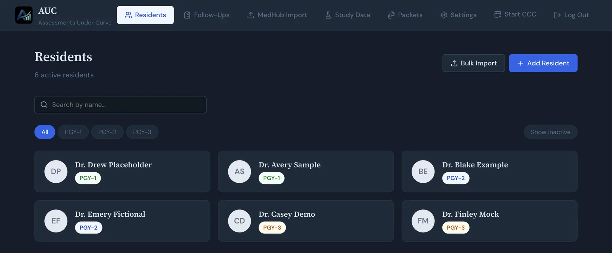
- Click a name to open that resident's page.
- Type in the search box to find someone fast.
- Click PGY-1, PGY-2, or PGY-3 to see one year only.
A resident's page has their notes, to-do items, MedHub ratings and comments, and AI summaries. You can also pick their advisor there. Packets in Part 3 need every resident to have an advisor.
3The menu at the top
The bar at the top of every screen takes you anywhere in AUC.
| Menu | What it is for |
|---|---|
| Residents | Your list of residents. The home screen. |
| Follow-Ups | To-do items for residents that are still open. |
| MedHub Import | Bring in new evaluations from MedHub (step 4). |
| Study Data | For research only. Most people can skip it. |
| Packets | Make PDF packets for an advisor meeting (Part 3). |
| Settings | Choose the AI model, add advisors, and make backups. |
| Start CCC | Use it during a committee meeting to note what was discussed. |
| Log Out | Sign out when you are done, especially on a shared computer. |
Part 2
Get an AI summary for one resident
The AI reads a resident's evaluations and writes a short draft for each ACGME milestone. You read it, fix it, and save it.
4Add new MedHub evaluations
AUC only knows the evaluations you give it. Add fresh ones before a meeting.
- In MedHub, run the Evaluation Questions Summary report for one form and a date range.
- Save that page from your browser: File, then Save Page As, as a web page.
- In AUC, click MedHub Import in the top menu.
- Drag the saved file into the dotted box, or click the box to find it.
- AUC shows you what is in the file. Nothing is saved until you say yes.

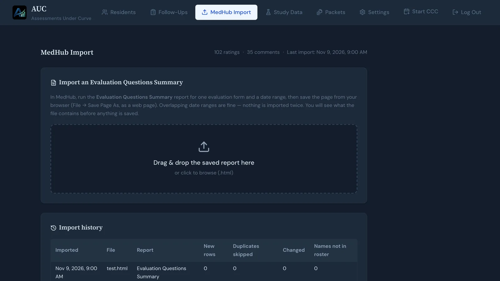
Good to knowDates that overlap are fine. AUC never adds the same evaluation twice.
5Choose the AI model (once)
- Click Settings, then AI & Summaries.
- Under Default Ollama model, pick the model the person who set up AUC told you to use.
- Check that ACGME reference index says Ready.

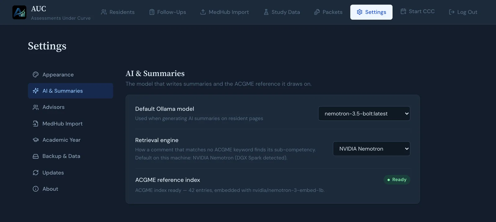
Why again?Each browser remembers its own choice. If you use a new computer or a new browser, pick the model again.
6Make a summary
- Open the resident's page and scroll down to AI Summaries.
- Leave Covering on Current review period. That is the time since their last review. (See Words to know.)
- Under Evidence, choose MedHub comments only, or include your committee's notes too.
- Check the line under the boxes. It shows the dates and how many comments the AI will read.
- Press Generate Summary. A bar shows how far along it is.

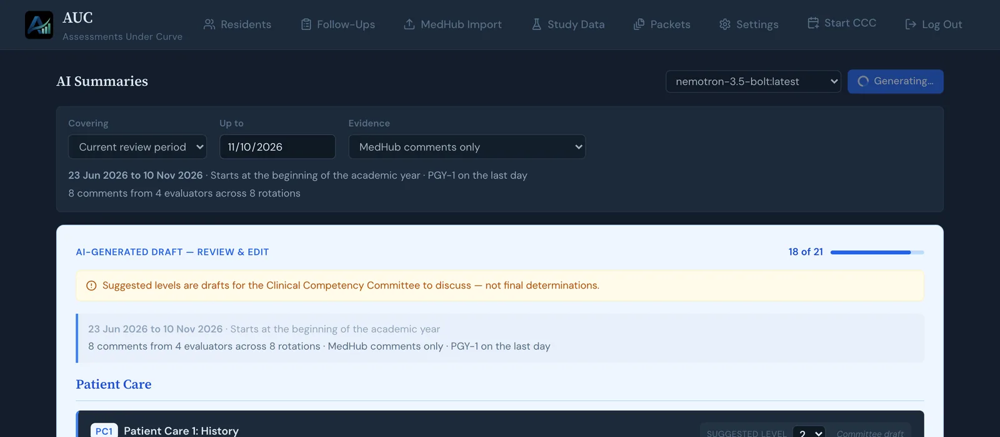
It usually takes a minute or two. A resident with no comments is done in a few seconds.
Want to see everything?Set Covering to All time. That shows the resident's whole history, not just this review period.
7Check the summary and save it
The draft has 21 boxes, one for each ACGME milestone. Each box can show:
- A short paragraph written by the AI. You can change the words.
- A suggested level from 1 to 5. It is only a suggestion for your committee to discuss. You can change it.
- Supporting evidence: the exact words from the evaluations, with who wrote them and when.
- Grey boxes that say No evidence in this review period. That is normal when a resident has only a few evaluations.

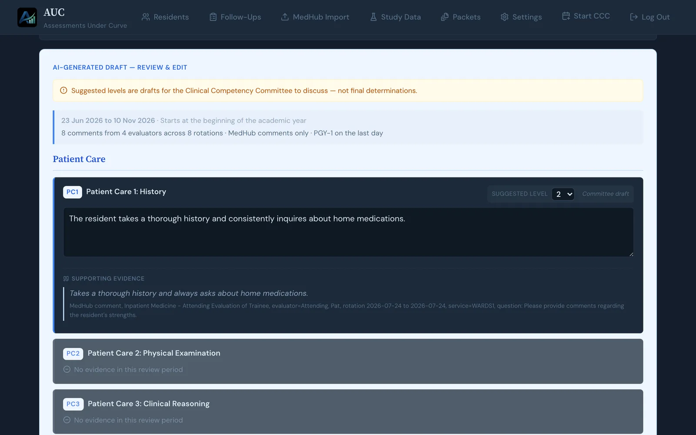
Why you can trust the quotesAUC checks every quote, word for word, against the real evaluations. If a quote does not match exactly, AUC throws it out before you ever see it.
When you are happy with it, press Approve & Save at the bottom. If you do not want it, press Discard.
CarefulPress one of those two buttons before you leave the page. If you leave first, the draft will not come back and you will need to make it again.
Part 3
Make packets for an advisor meeting
A packet is a short PDF about one resident, for their advisor to bring to a meeting. AUC makes one for every advisee in a few clicks. Packets are AI drafts. Nothing is sent to anyone. You download the files and hand them out yourself.
8Start a meeting
- Click Packets in the top menu.
- In New meeting on, pick the date of the advisor meeting.
- The Cutoff date fills itself in, 7 days earlier. Packets only use evaluations up to that day.
- Press Open.
To come back to a meeting later, choose it under Open a meeting.

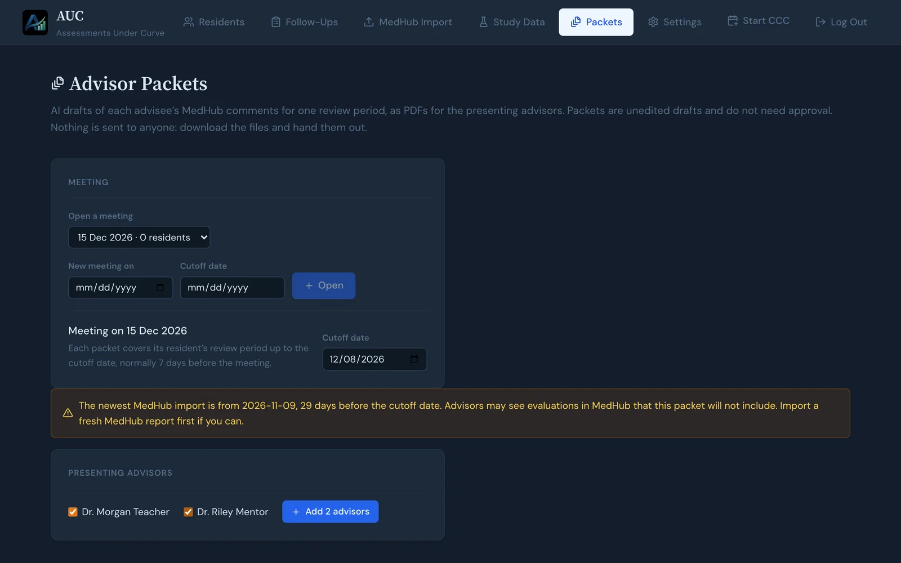
See a yellow box?It means your newest MedHub evaluations are older than the cutoff date. Do step 4 first, so advisors do not see evaluations in MedHub that are missing from the packet.
9Add the advisors who are presenting
- Under Presenting advisors, tick each advisor who is presenting.
- Press Add advisor. Each advisor's residents come with them.
Each resident now has a row. It shows their review period, how many comments they have, and a Few evaluations tag if there is not much to go on.
No advisors in the list?Add them in Settings, under Advisors. Then choose each resident's advisor on the resident's page.
10Groups (only if you are in a study)
Not part of a research study? Skip this step. AUC makes packets for everyone either way.
If you are in a study, your study plan says whether each resident's packet goes out first or later. AUC can split them for you:
- Press Randomize within each advisor.
- AUC asks if you are sure. Press OK.
- Each advisor's residents are split evenly into Packet first and Packet delayed. You see this in the Group column.

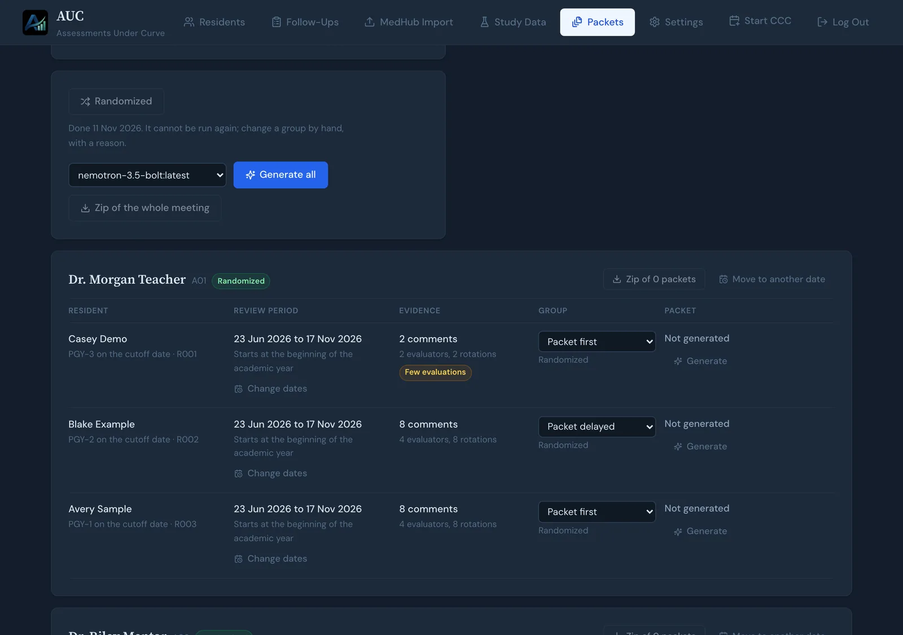
Only onceYou can randomize only once per meeting, and you cannot undo it. If you must move one resident to the other group, change it in the drop-down. AUC will ask you to type a short reason.
11Make the packets
- Check that the model next to the button is the one you were told to use.
- Press Generate all.
- AUC makes one packet at a time. A bar shows how many are ready. You can leave the page and come back.
Allow about 2 minutes for each resident who has comments. Residents with no comments are done in seconds.

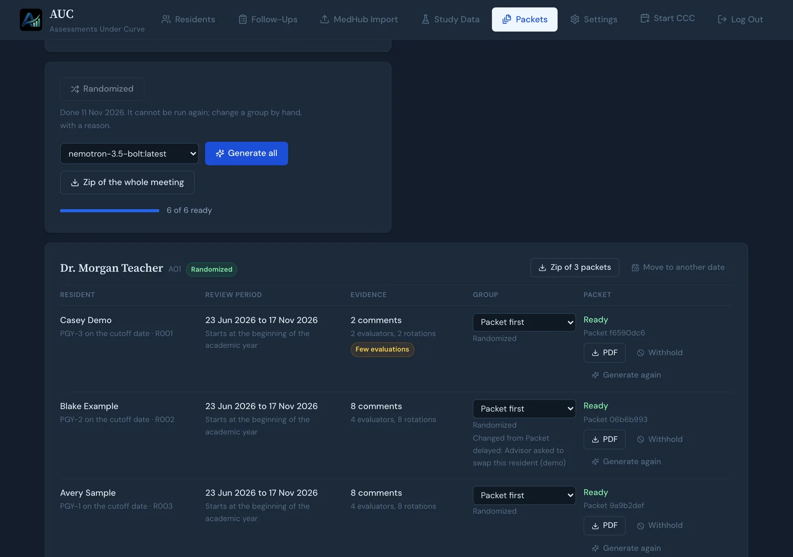
A row says Failed?Press Generate again on that row. If it keeps failing, tell the person who looks after the AUC computer.
12Download and hand them out
- Zip of 3 packets next to an advisor's name downloads that advisor's packets in one file.
- Zip of the whole meeting downloads every packet, in one folder per advisor.
- PDF on a row downloads just that one packet.
A packet looks like this. The top says who it is for and which dates it covers. Then each of the six competencies has its MedHub ratings, Strengths, and Growth areas, each backed by exact quotes.

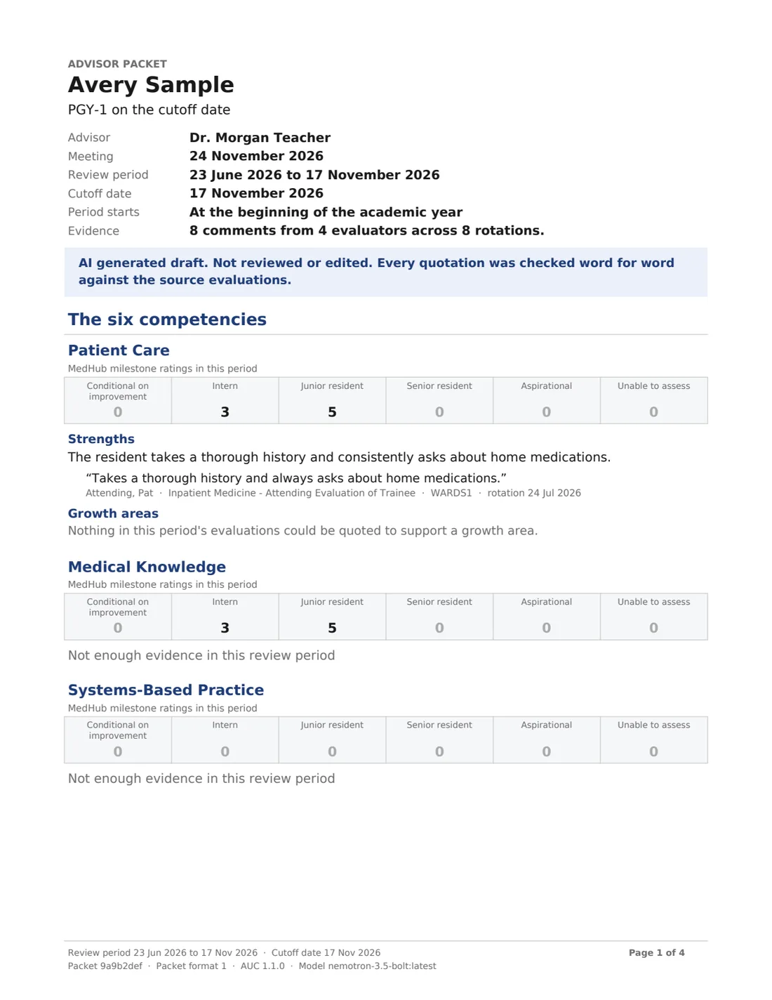
13Hold a packet back
Sometimes a packet should not go out, for example if the advisor is away.
- Press Withhold on that resident's row.
- Type one line saying why, and press OK.
That packet is now left out of every zip. Your committee can still open it with its own PDF button.

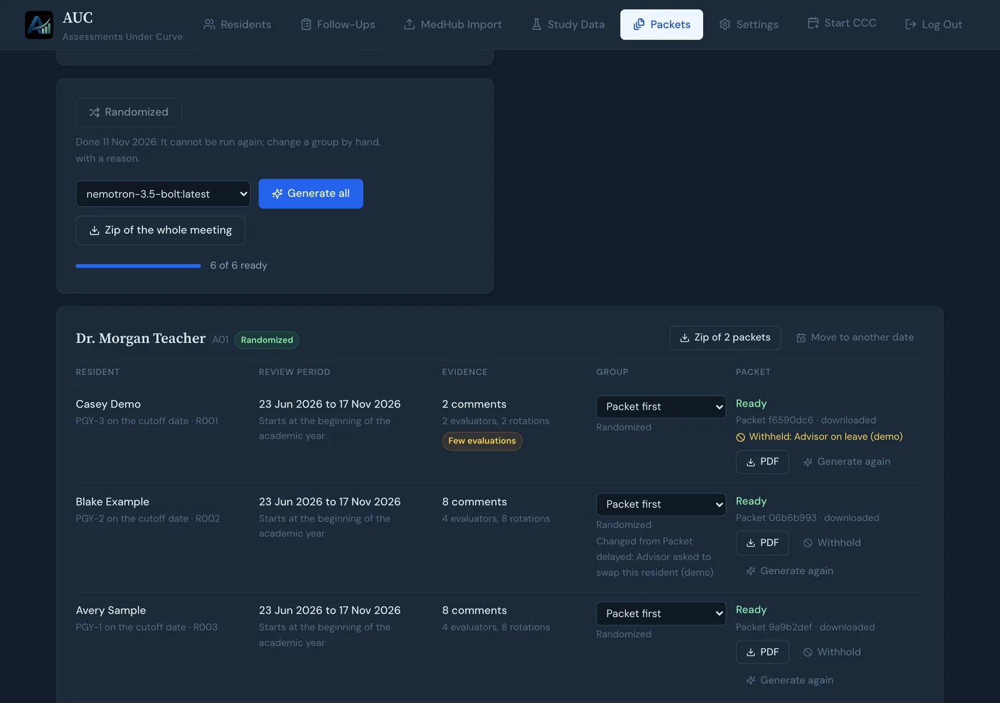
14Check a packet before you hand it out
Open one or two packets on the AUC computer and ask:
- Is the name, advisor, PGY year, and date range right?
- Does the top say AI generated draft. Not reviewed or edited.?
- Do the rating counts roughly match MedHub for the same dates?
- Pick three quotes and find them in MedHub. Are they word for word?
- Is everything the AI says actually backed up by the comments?
- Does the page look right, with nothing cut off?
Write down only yes, no, or a number. Do not copy comments off the computer. There is a printable form for this in the accuracy record.
Words to know
- CCC
- Clinical Competency Committee. The group that reviews how each resident is doing.
- Advisor
- The faculty member who presents a resident at the meeting.
- Review period
- The dates a summary or packet looks at. It starts the day after the resident's last packet. If they have never had one, it starts after the last CCC meeting this year where they were discussed. If neither happened, it starts on 23 June. It ends on the cutoff date.
- Cutoff date
- The last day of evaluations a packet uses. Usually 7 days before the meeting.
- Packet
- A short PDF about one resident, made by the AI for their advisor.
- Withhold
- Keep one packet out of the downloads, with a reason.
- PGY
- Postgraduate year. PGY-1 is the first year of residency.
- Model
- The AI program that writes the drafts. It runs on your AUC computer, not on the internet.
For the person who looks after the AUC computer
Most people can stop here. This part is for whoever installed AUC. It covers checking that the computer and AI are healthy, and practising on a safe copy before the first real meeting. It uses the terminal (the text window where you type commands).
Check the computer and the AI model
On the AUC computer, open a terminal and run these one at a time. They use only made-up test comments, so the output is safe to share.
cd ~/.local/share/auc/app/current
bash preflight.sh
bash check-model.sh <model-name> --show-outputReplace <model-name> with the exact name in Settings, under Default Ollama model. The accuracy record used nemotron-3.5-bolt:latest.
- preflight.sh should show many checks passed and no failures. A warning that says "No database yet" can be a false alarm when you run it by hand. Check that the real app (usually on port 3000) opens and lets you sign in.
- check-model.sh takes a few minutes. It should say the replies parsed, the quotes were exact, the levels were usable, and packet Strengths and Growth areas were kept. Its verdict should be usable.
Copying commandsDo not wrap a command in backticks (the ` character) before you paste it. The terminal may try to run the wrong thing and show a confusing error.
Practise on a safe test copy
Randomizing cannot be undone, so try Packets on a copy first, never on the database your committee uses every day.
1. Make the copy
From the app folder, run:
mkdir -p ~/auc-packet-test
backend/venv/bin/python -c "import sqlite3,os; s=sqlite3.connect(os.path.expanduser('~/.local/share/auc/data/auc.db')); d=sqlite3.connect(os.path.expanduser('~/auc-packet-test/auc.db')); s.backup(d); d.close(); print('copied')"It should print copied and nothing else. If you installed from a git checkout, change the first path to point at your real auc.db.
2. Start the copy on a second address
In a second terminal, run this and leave the window open:
cd ~/.local/share/auc/app/current && AUC_DATA_DIR=$HOME/auc-packet-test AUC_PORT=3001 bash run.shOpen http://localhost:3001 (or the computer's address with :3001 at the end). Sign in with your usual password and choose the model in Settings again. Until you are done, use only port 3001.
3. Count problems in the log
After making packets on the copy, count these lines. The commands print numbers only.
grep -c "DROPPED QUOTE" ~/auc-packet-test/logs/summary_validation.log
grep -cE "COMPETENCY.*DISCARDED" ~/auc-packet-test/logs/summary_validation.log
grep -c "TRUNCATED" ~/auc-packet-test/logs/summary_validation.log- DROPPED QUOTE: a quote was not exact, so AUC threw it out. A few is normal.
- DISCARDED: a whole competency section was thrown out.
- TRUNCATED: the AI's answer was cut off, often because it was too long for the model.
A 0 is a clean result. On the real app, the log is in ~/.local/share/auc/data/logs/.
4. Clean up
The test folder is a full copy of resident data. In the window running port 3001, press Ctrl+C and wait for it to stop. Then, after checking that this is the test folder and not your real one, run:
rm -rf ~/auc-packet-testOpen the real app on port 3000. It should still work, and Packets should not show your test meeting. If the test meeting shows up there, stop and sort that out before a real meeting.
Taking screenshots?Never publish a screenshot that shows a real resident or advisor. Use a fresh, empty test copy with made-up names, like the pictures on this page.
Where the app and data live
A normal install keeps the app in ~/.local/share/auc/app/current. The scripts preflight.sh, check-model.sh, and run.sh are in that folder. The data, including the database, is in ~/.local/share/auc/data, set in ~/.config/auc/auc.env.
A git checkout is laid out differently. It has an auc/ folder. Run the same scripts from whichever folder actually contains them.
Before a research study: write down four things
If packets are part of a study, write these down before you randomize, and do not change them until the study ends:
- Model: the exact name, for example
nemotron-3.5-bolt:latest - Retrieval engine: for example NVIDIA Nemotron (in Settings, AI & Summaries)
- App version: for example 1.1.0
- Packet format version: copy it from the bottom of any packet page
Import a fresh MedHub report before you make packets for a real meeting. For a worked example of this whole check, with one program's results and a blank form, see the accuracy record.